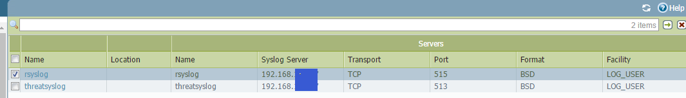
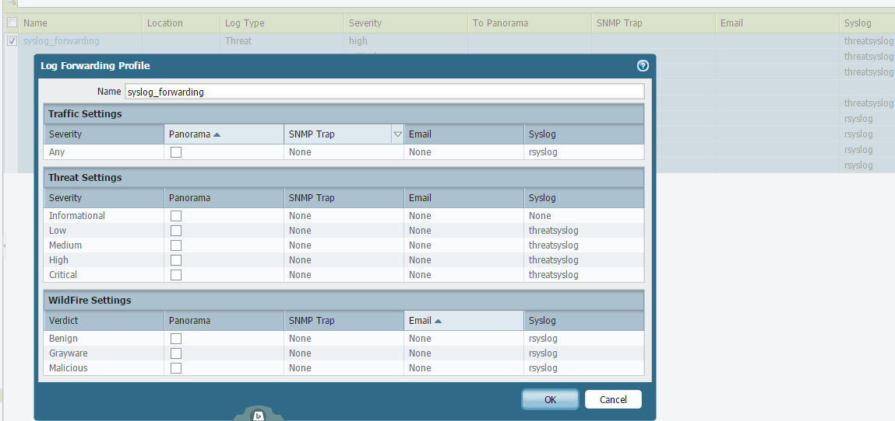
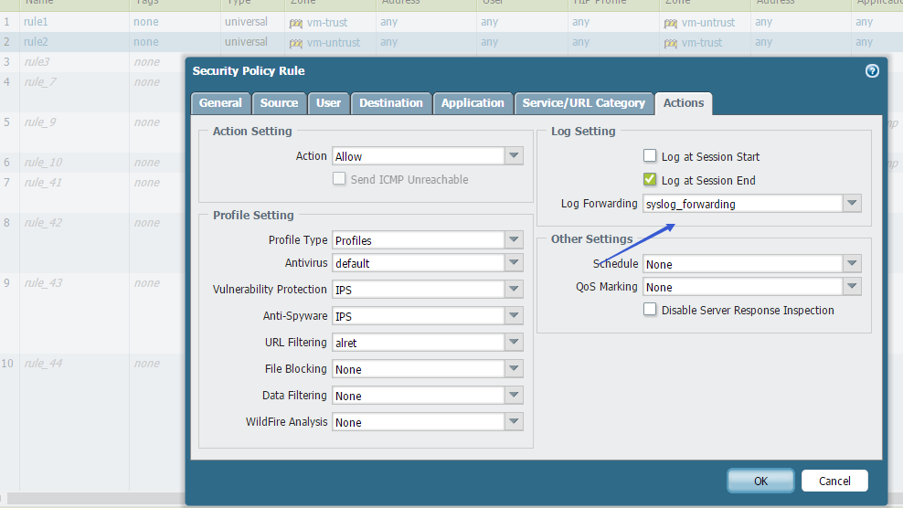
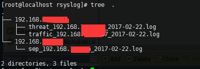

paloalto日志转发到elk1
在内网想构建个日志分析系统，便于分析蜜罐、paloalto、VPN、赛门铁克的告警日志。针对paloalto的日志采集是通过以下架构: paloalto -> syslog -> logstash -> elastic search -> kibana
配置 paloalto
进入 paloalto 在 Device 中配置 syslog,如图:
 之后在 Objects 内配置 Log Forwarding Profile,如下：
 注意 Syslog,通信日志和威胁日志为不同端口。 最后在 Policies Security 上配置上log Forwarding

配置 rsyslog
安装略，主要是配置文件。 配置文件配置方式分新旧两种方式，旧式(不影响使用)：
$ModLoad imtcp
$InputTCPServerRun 515
$AllowedSender TCP, 192.168.136.0/24
$template Remote2,"/var/log/rsyslog/%fromhost-ip%/traffic_%fromhost-ip%_%$YEAR%-%$MONTH%-%$DAY%.log"
# The above code is old-fashioned
新格式为：
# /etc/rsyslog.d/pa_traffic.conf
module(load="imtcp")
template (name="DynFile1" type="string" string="/var/log/rsyslog/%fromhost-ip%/traffic_%fromhost-ip%_%$YEAR%-%$MONTH%-%$DAY%.log")
input(type="imtcp"
port="515"
ruleset="pa_traffic")
ruleset(name="pa_traffic"){
action(type="omfile" dynaFile="DynFile1")
}
# end file
# /etc/rsyslog.d/pa_threat.conf
module(load="imtcp")
template (name="DynFile2" type="string" string="/var/log/rsyslog/%fromhost-ip%/threat_%fromhost-ip%_%$YEAR%-%$MONTH%-%$DAY%.log")
input(type="imtcp"
port="513"
ruleset="pa_threat")
ruleset(name="pa_threat"){
action(type="omfile" dynaFile="DynFile2")
}
# end file
# cat /etc/rsyslog.conf|grep -i include
$IncludeConfig /etc/rsyslog.d/*.conf
日志生成如下:

参考文档
- http://rsyslog-doc.readthedocs.io